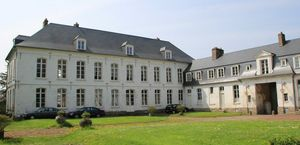
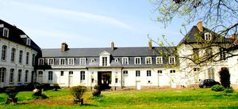
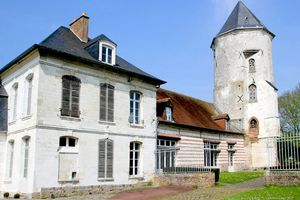

Recensement Jean-Claude Truffet
| Département | 80 — Somme |
| Canton | Flixecourt |
| Commune | Flesselles |
| Type d'édifice | Château |
| Période d'origine | XIV- |
| Coordonnées GPS | 50° 00' 07" Nord, 2° 15' 38" Est |



FLESSELLES, la seigneurie de Flesselles est attestée à partir du XIIe siècle. Elle appartenait au début du XIVe siècle à Guillaume de Saveuse qui fait bâtir un château à plusieurs tours, dont l'une est conservée. Au XVIIe siècle, un nouveau château fut construit pour la famille Brégy de Flesselles, de cet édifice reste l'actuelle salle de réception. En 1744 le château fut vendu à Alexandre Nicolas de Bray, qui fit édifier en 1747 le corps de logis actuel et le pavillon à étage carré. La liaison entre le corps de logis et le pavillon est assurée par un bâtiment à portail néo-classique, qui aurait été construit vers 1780 par l'architecte Rousseau. Charles de Chévigné, au XIXe siècle, agrandit le parc. Il remania aussi l'aménagement intérieur : établissement d'un fumoir, réfection de l'escalier et des boiseries du corps de logis. Le château a été en partie restauré par son propriétaire actuel en 1985 : aménagement de salles de réception près de la tour.
Les bâtiments s'organisent autour d'une cour rectangulaire ouverte au nord. Le côté sud de la cour est occupé par le corps de logis élevé en craie et couvert en ardoises. Le côté Est est délimité par trois bâtiments de communs : le premier est en craie, le deuxième est en briques et pierres (façade arrière) et en torchis (façade avant), le troisième est en briques. En face, le côté ouest de la cour comprend un bâtiment en craie avec portail d'entrée et toit brisé, un pavillon en craie de même élévation que le corps de logis, et des communs en briques et pierres englobant une tour circulaire en craie, voûtée d'ogives, couverte d'une flèche. Éléments protégés MH : les façades et les toitures du château ; l'escalier avec sa rampe à balustres de bois et la salle à manger et le salon avec leur décor au rez-de-chaussée : inscription par arrêté du 31 juillet 1979
FLESSELLES. Autrefois, le château était entouré de 7 tours. C'est le seul vestige de l'ancienne forteresse du XIVe siècle. Les comptes des frères Duthoit indiquent en août 1842 et en novembre 1843, la fourniture de rosaces de plafond, de corniches et d'éléments en carton-pierre destinés au salon et à la salle à manger du château, à Flesselles. Le Marquis est décédé le 2/06/1879 et son épouse, le 8/07/1896 à Paris. Marie-Louise, née en 1843, petite fille du marquis de Chevigné, épousa Casimir-Louis-François de Sainte-Aldégonde, décédé en 1873. Au décès de la marquise de Chevigné, le domaine échut à leur petit-fils, Edmond-Arthur-Gaston-Jules, de Sainte-Aldégonde, né en 1866, qui épousa Marie-Marthe des Acrés de L'Aigle, mais décéda à 38 ans, en 1904. Puis, en 1920, le domaine passe dans les mains de la fille de ces derniers, Adèle Aglaé Marie Louise Aldegonde , née à Paris le 30 août 1895, épouse du Prince Stanislas Auguste Charles Hubert Guillaume Poniatowski, qui vendit le château en 1937 à un cultivateur, Georges Ferté. Le château de flesselles est, depuis 1977, la propriété de M. et Mme Patrick Benoit, qui, avec leurs enfants, le réhabilitent, le château de Flesselles est le seul à conserver un élément médiéval significatif dans le canton de Villers Bocage où la plupart des grandes demeures ont été reconstruites à partir du XVIIe siècle, et son cops de logis est le seul à porter une date dans le canton. Le portail néo-classique rappelle le style de Rousseau à Amiens et à Saint-Gratien. Éléments protégés MH : les façades et les toitures du château.
Famille de Brégy de Flesselles,"
Flesselles GPS : 50° 00' 07" Nord, 2° 15' 38" Est